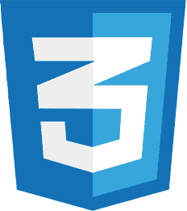
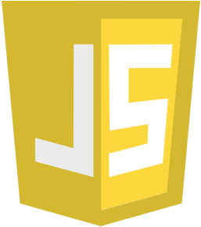

À propos de moi
____
Mon histoire
Je m'appelle Rayan BENNACEUR et je suis âgé de 22 ans.
Je suis titulaire d'un baccalauréat général spécialité Physique-Chimie et SVT option mathématique, et je suis suis actuellement en 2e année de BTS SIO spécialité SLAM (Solutions Logiciels et Applications Métiers).
Je suis passionné de nouvelles technologies et je souhaite faire carrière dans ce secteur.
Évoluer dans le domaine de l'informatique, étudier en profondeur les différents aspects des métiers de l'informatique, me mettent au service de l'innovation technique qui régit notre monde, sont autant d'arguments qui motivent mon choix.
Mes centres d'intérêts
___________ Jeux vidéos ___________
Qui n'aime pas les jeux vidéos ? Nous pouvons être des super-héros, des sorciers, des elfes… Et si on veut laisser tomber notre sens de l'éthique, des démons ou des parias de la société…
Bref, tout ce dont un homme puisse rêver se trouve dans les jeux vidéos.
___________ Musculation ___________
Je m'entraîne depuis 2 ans à la salle de sport. C'est pour moi un bon moyen de me défouler tout en m'entretenant, car rester des heures devant un PC laisse des séquelles à long terme...

___________ Manga ___________
Les mangas sont pour moi une évasion. Ils me permettent de stimuler ma réflexion et à la fois mon imagination !
One Piece de Eiichiro Oda est mon manga préféré.
Qu'est-ce que le BTS SIO ?
____
Assez parlé de mes goûts, concentrons-nous dès à présent sur mon parcours
Le BTS SIO (Services Informatiques aux Organisations) est un diplôme national en informatique qui se prépare en deux ans, accessible tant en formation continue qu'en alternance.
Cette formation, d'une durée de deux ans, est destiné aux titulaires d'un baccalauréat général, technologique ou professionnel (avec une spécialisation en Systèmes Numériques) et a pour vocation de former des professionnels capables de contribuer activement à la production et à la fourniture de services informatiques aux organisations.
On y distingue 2 spécialités :
Option SISR
L'option Solutions d'Infrastructure, Systèmes et Réseaux forme des professionnels des réseaux et équipements informatiques (installation, maintenance, sécurité). En sortant d'un BTS SIO option SISR, vous serez capables de gérer et d'administrer le réseau d'une organisations et d'assurer sa sécurité et sa maintenance. L'objectif pédagogique de la formation est de répondre aux attentes des utilisateurs en assurant la disponibilité des services informatiques.
En ayant suivi une autre formation après votre BTS SIO Option SISR, ou non, voici quelques métiers auxquels vous pourrez accéder :
- Technicien Systèmes et Réseaux
- Informaticien support et déploiement
- Technicien Réseau/Télécoms
- Pilote d’exploitation
- Technicien micro et réseaux
- Technicien d'infrastructure
Option SLAM
L’option Solutions Logiciels et Applications Métiers forme des spécialistes des logiciels (rédaction d’un cahier des charges, formulation des besoins et spécifications, développement, intégration au sein de la société). Elle est destinée aux étudiants qui s'orientent vers les métiers liés à la conception et la maintenance de programmes applicatifs.
Voici quelques exemples de métiers que vous pourrez exercer après le BTS SIO option SLAM, avec une formation complémentaire par la suite ou non :
- Développeur de sites internet d’applications informatiques
- Analyste d’applications ou d’études
- Analyste programmeur
- Programmeur analyste
- Programmeur d’applications
- Responsable des services applicatifs
- Technicien d’études informatiques
Q'est-ce que l'épreuve E5 ?
____
L'épreuve E5 représente une étape importante du BTS SIO. Elle exige la présentation d'au moins deux projets, liés par un contexte commun et en relation avec l'option sélectionnée, à savoir SLAM dans mon cas. Cet examen a pour but d'évaluer l'une des deux situations professionnelles mises en œuvre au cours des deux années de formation. Elle est également accompagnée d'une grille où sont décrites les aptitudes élaborées et appliquées à travers les projets exposés.
Vous pouvez la voir en détail ici :

Mes compétences
____
  
HTML
CSS
Javascript
PHP
Java
Mes certifications
____
bananes